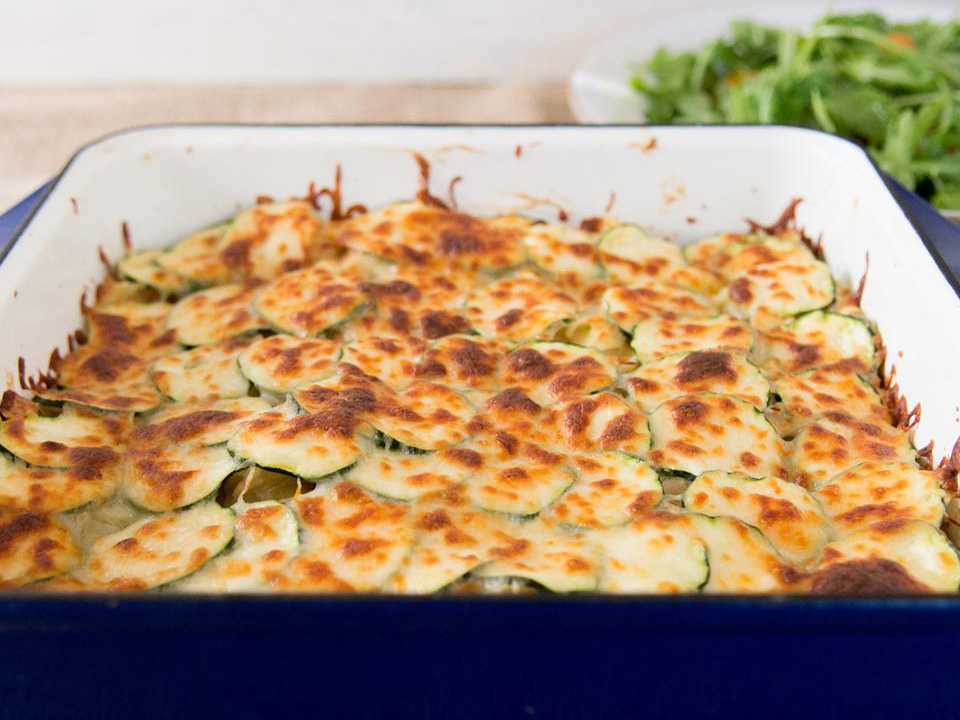

Tuna Casserole

Description:
Not gonna lie, the casserole is mid, but it is filling
Ingredients:
- cups uncooked egg noodles
- 2 (5 ounce) cans tuna, drained
- ½ cup chopped celery
- ⅓ cup chopped green onions
- ⅓ cup sour cream
- 2 teaspoons prepared mustard
- ½ cup mayonnaise
- ½ teaspoon dried thyme
- ¼ teaspoon salt
- 1 small zucchini, sliced
- 1 cup shredded Monterey Jack cheese
- 1 tomato, chopped
Steps:
- Catch tuna
- Create tension
- Cry?
- Draw the rest of the owl